Teorik bilgiyi gerçek dünyada karşılığı olan, yayında ürünlere dönüştürüyorum.
Bir bilgisayar mühendisi adayı olarak en büyük motivasyonum, teorik bilgileri gerçek dünyada karşılığı
olan projelere dönüştürmektir. Bu doğrultuda farklı alanlarda projeler geliştirdim, ekip çalışmalarında
ve yarışmalarda aktif olarak yer aldım. Şu anda ağırlıklı olarak Makine Öğrenmesi, Derin Öğrenme ve
Görüntü İşleme alanlarında çalışıyor; bu alanlarda proje geliştirerek hem akademik hem de pratik deneyim
kazanıyorum.
Bunun yanı sıra mobil uygulama geliştirme de aktif olarak ilgilendiğim bir diğer alandır. ATAUNI OBS
mobil uygulaması klonu ile MEDİKO – Yemek & Bakiye gibi projeler geliştirdim. MEDİKO uygulaması
sayesinde öğrenciler günlük yemek menüsü ve bakiye bilgilerini kolayca görüntüleyebilmektedir. Uygulama
hâlihazırda App Store ve Play Store üzerinden ücretsiz olarak canlıda kullanılmaktadır.
Flutter ile geliştirdiğim bu mobil uygulamayı, öğrenci arkadaşlarımın günlük yemek menüsünü görüntüleyebilmesi ve bakiye sorgulaması yapabilmesi için tasarladım. Bakiye sorgulama özelliği okulumuzun mevcut sistemine entegre çalışmakta olup, kullanıcıların güncel hesap bilgilerini gerçek zamanlı olarak alır. Ayrıca bakiye yetersiz olduğunda kullanıcıyı otomatik olarak uyarır ve bakiye yükleme sayfasına yönlendirir.
Flutter ile geliştirdiğim bu mobil uygulamayı, öğrenci arkadaşlarımın günlük yemek
menüsünü
görüntüleyebilmesi ve bakiye sorgulaması yapabilmesi için tasarladım. Bakiye sorgulama
özelliği okulumuzun mevcut sistemine entegre çalışmakta olup, kullanıcıların güncel
hesap
bilgilerini gerçek zamanlı olarak alır. Ayrıca bakiye yetersiz olduğunda kullanıcıyı
otomatik olarak uyarır ve bakiye yükleme sayfasına yönlendirir.
Yemek menüleri ise okulun web sitesinden HTML parse yöntemi ile anlık olarak
çekilmektedir.
Böylece uygulama, manuel müdahale gerektirmeden sürekli olarak güncel kalmaktadır.
Uygulama İOS ve Android platformlarında mevcuttur. 200+
kullanıcı tarafından aktif olarak kullanılmaktadır.
Kullanılan Teknolojiler - Flutter, Dart.
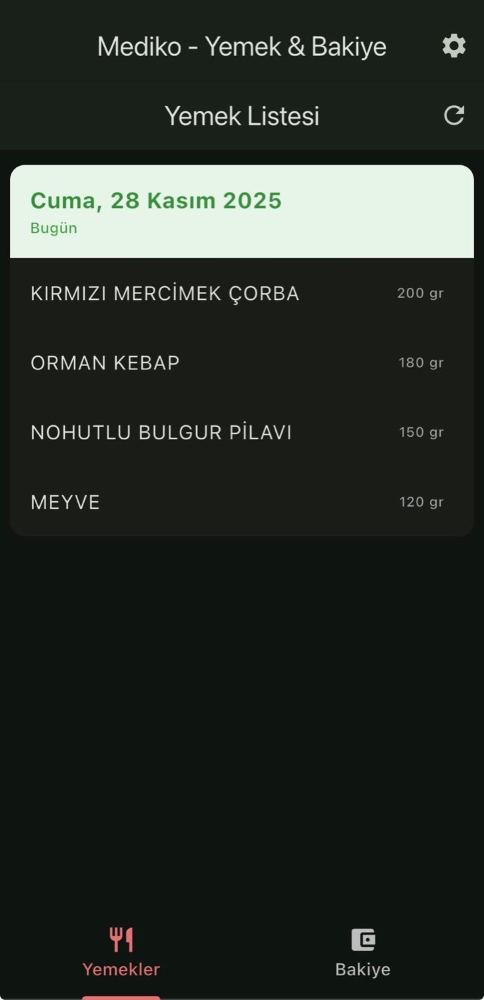
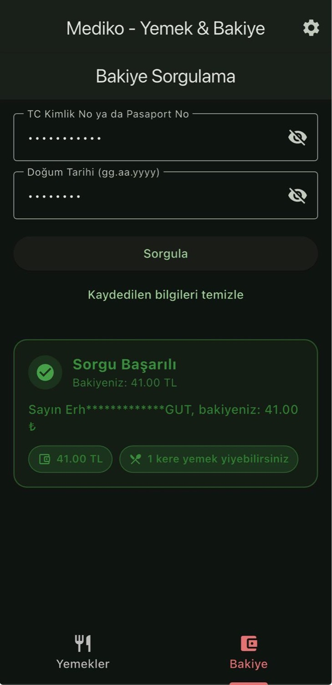
Bu projede, Transfer Learning tabanlı hibrit mimariler ve sıfırdan tasarladığım özgün CNN modellerinin performansını karşılaştıran kapsamlı bir derin öğrenme çalışması gerçekleştirdim. Modelleri eğitmeden önce parametre optimizasyonu, Augmentation ve EDA gibi çalışmalar ile verileri eğitime hazır hale getirdim.
Bu projede, Transfer Learning tabanlı hibrit mimariler ve sıfırdan tasarladığım özgün CNN
modellerinin
performansını karşılaştıran kapsamlı bir derin öğrenme çalışması gerçekleştirdim.
Modelleri
eğitmeden önce parametre optimizasyonu, Augmentation ve EDA gibi çalışmalar ile verileri
eğitime hazır hale getirdim.
TensorFlow ve Albumentations kullanarak geliştirdiğim projede,
MobileNetV2 ve ResNet50 tabanlı hibrit modelin Fine-Tuning edilmesiyle %99,61 F1-Score
elde
ettim. Sıfırdan geliştirdiğim EYTV10 modelimde Aşamalı Boyutlandırma, TTA ve Label
Smoothing
tekniklerini uygulayarak %99,01 F1-Score elde ederek başarıya ulaştım. Bu proje ile
modern
eğitim stratejileri kullanıldığında, özgün modellerin büyük ön eğitimli modellerle
rekabet
edebileceği
sonucunu elde ettim.
Proje yaklaşık 9500 adet MR görüntüsü kullanılarak
gerçekleştirilmiştir. Bu görütnüler 'tumor' ve 'no tumor' olarak 2 sınıfa dengeli olarak
dağılmıştır.
Kullanılan Teknolojiler - Python, TensorFlow, Matplotlib.
Kütüphanelerde boş masa ararken yaşanan zaman kaybını ortadan kaldırmak için geliştirdiğim bu projede, masalar üzerindeki nesneler YOLO modeli ile gerçek zamanlı olarak tespit edilmekte ve etiketlenmektedir. Kitap, laptop, çanta veya insan gibi belirli nesneler masa alanı içinde algılanırsa masa 'dolu' olarak, aksi durumda 'boş' olarak işaretlenmektedir.
Kütüphanelerde boş masa ararken yaşanan zaman kaybını ortadan kaldırmak için
geliştirdiğim bu
projede, masalar üzerindeki nesneler YOLO modeli ile gerçek zamanlı olarak tespit
edilmekte ve etiketlenmektedir. Kitap, laptop, çanta veya insan gibi belirli nesneler
masa
alanı
içinde algılanırsa masa 'dolu' olarak, aksi durumda 'boş' olarak işaretlenmektedir.
Masa alanları config.json dosyası üzerinden kalıcı şekilde saklanmaktadır ve düzenleme
modu
sayesinde
kolayca yeniden çizilebilmektedir. Nesnelerin doğruluk eşiklerinin ayarlanması ile
algılama
hassasiyeti kontrol edilmekte ve yalnızca masa bölgeleri içerisindeki nesneler
işaretlenerek
sade bir
arayüz sunulmaktadır. Böylece kullanıcılar alana girmeden önce boş masaları hızlıca
görebilmektedir.
Kullanılan Teknolojiler - Python, OpenCV, YOLO.
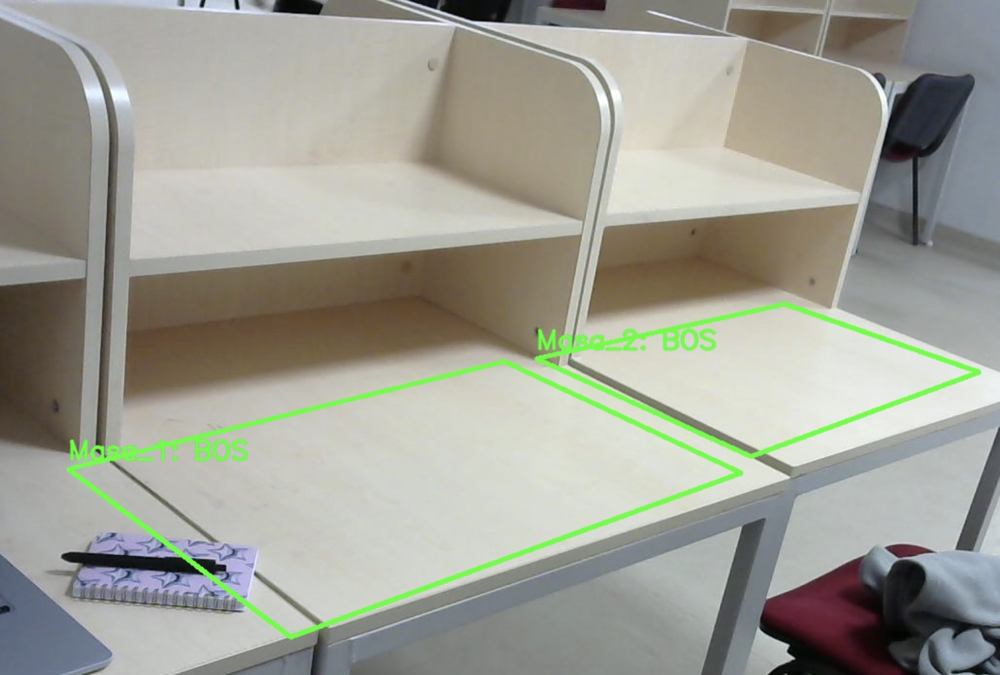
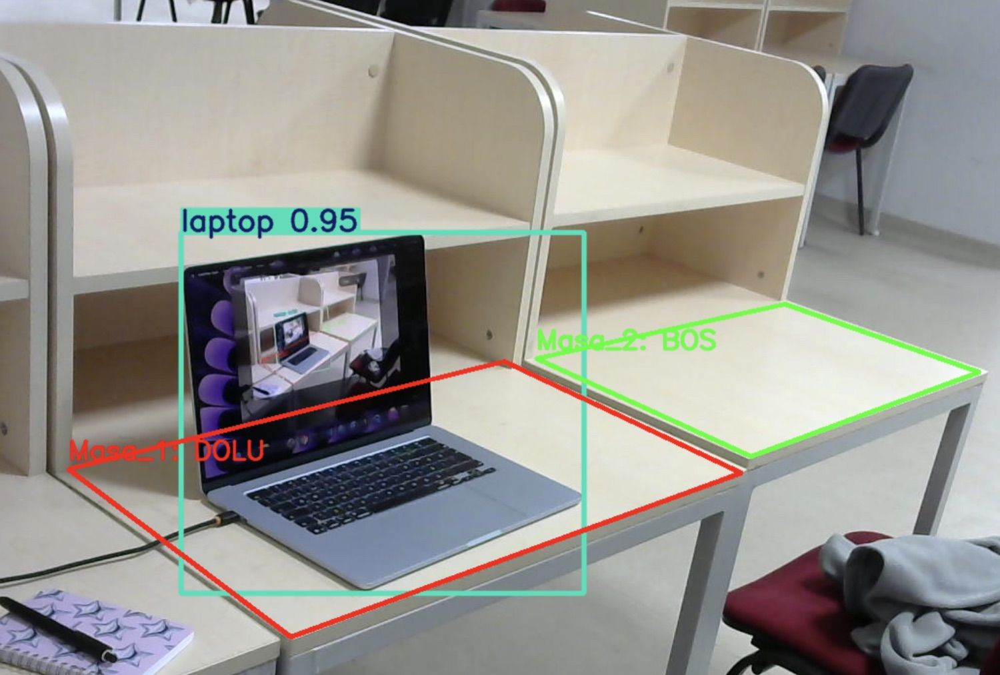
Bu proje, üniversiteler bünyesinde meydana gelebilecek acil sağlık durumları, güvenlik ihlalleri, çevresel problemler ve benzeri olayların mobil bir uygulama aracılığıyla hızlı ve etkili biçimde raporlanmasını amaçlamaktadır. Klasik sözlü bildirim yöntemleri yerine, konum tabanlı ve görsel destekli bir bildirim altyapısı sunulmuştur. Sistem mimarisi; kullanıcı (User), yönetici (Admin) ve süper yönetici (Super Admin) olmak üzere üç farklı rol üzerine kuruludur. Kullanıcılar kampüs haritası üzerinde olayları görüntüleyebilmekte, yeni bildirim oluşturabilmekte ve bildirimlerin durumlarını takip edebilmektedir. Admin rolü, kendi üniversitesine ait bildirimleri yönetme ve acil uyarılar gönderme yetkisine sahipken, Super Admin tüm üniversiteler genelinde kullanıcı ve bildirim yönetimini gerçekleştirebilmektedir.
Bu proje, üniversiteler bünyesinde meydana gelebilecek acil sağlık durumları, güvenlik
ihlalleri, çevresel problemler ve benzeri olayların mobil bir uygulama aracılığıyla
hızlı ve etkili biçimde raporlanmasını amaçlamaktadır. Klasik sözlü bildirim yöntemleri
yerine, konum tabanlı ve görsel destekli bir bildirim altyapısı sunulmuştur. Sistem
mimarisi; kullanıcı (User), yönetici (Admin) ve süper yönetici (Super Admin) olmak üzere
üç farklı rol üzerine kuruludur. Kullanıcılar kampüs haritası üzerinde olayları
görüntüleyebilmekte, yeni bildirim oluşturabilmekte ve bildirimlerin durumlarını takip
edebilmektedir. Admin rolü, kendi üniversitesine ait bildirimleri yönetme ve acil
uyarılar gönderme yetkisine sahipken, Super Admin tüm üniversiteler genelinde kullanıcı
ve bildirim yönetimini gerçekleştirebilmektedir.
Uygulama, yüksek performans ve çoklu platform desteği sağlamak amacıyla Flutter
framework’ü kullanılarak geliştirilmiştir. Sunucu tarafında Node.js ile asenkron çalışan
bir API mimarisi oluşturulmuş, kullanıcı ve bildirim verilerinin güvenli şekilde
saklanması için MSSQL veritabanı tercih edilmiştir. Bildirimlere eklenen görsellerin
hızlı ve verimli biçimde depolanabilmesi amacıyla Firebase Storage kullanılmıştır.
Geliştirilen bu sistem sayesinde kampüs güvenliğinin artırılması, olaylara müdahale
süresinin kısaltılması ve üniversiteler arası merkezi bir dijital bildirim altyapısının
oluşturulması hedeflenmektedir.
Bu projede mobil uygulamanın kullanıcı arayüzünün geliştirilmesi, MSSQL veritabanı
yapısının oluşturulması ve Node.js ile geliştirilen API servislerinin mobil uygulamaya
entegre edilmesi kısımlarında çalışmalarda bulundum.
Kullanılan Teknolojiler - Flutter, NodeJS, MSSQL, Firebase
Storage
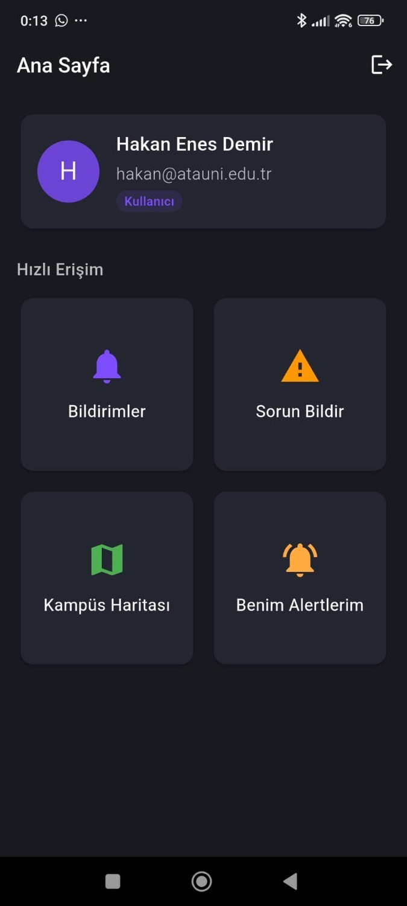
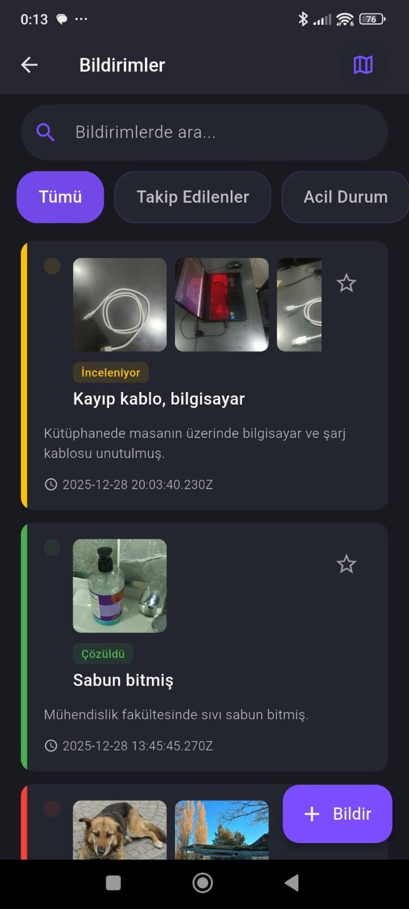
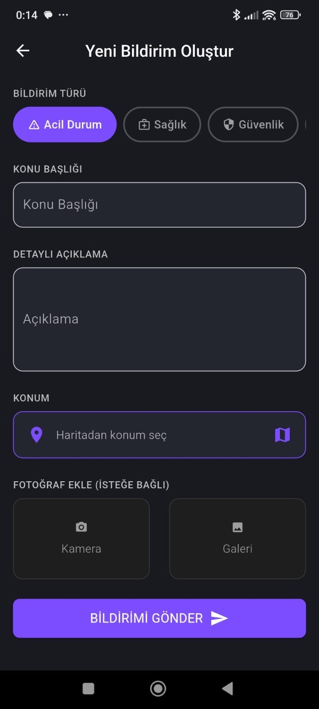
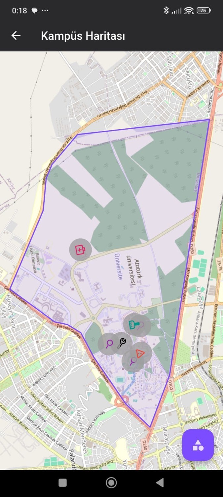
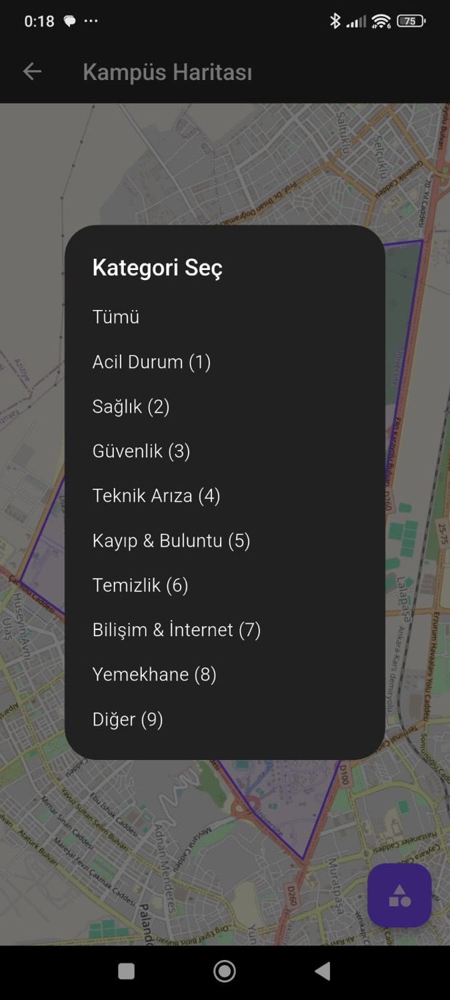
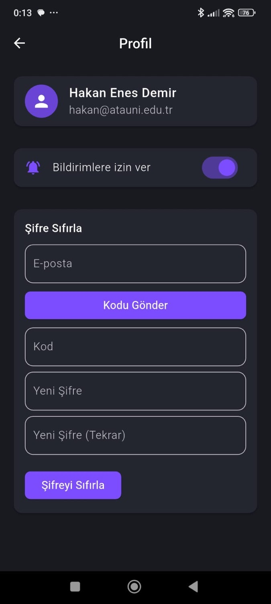
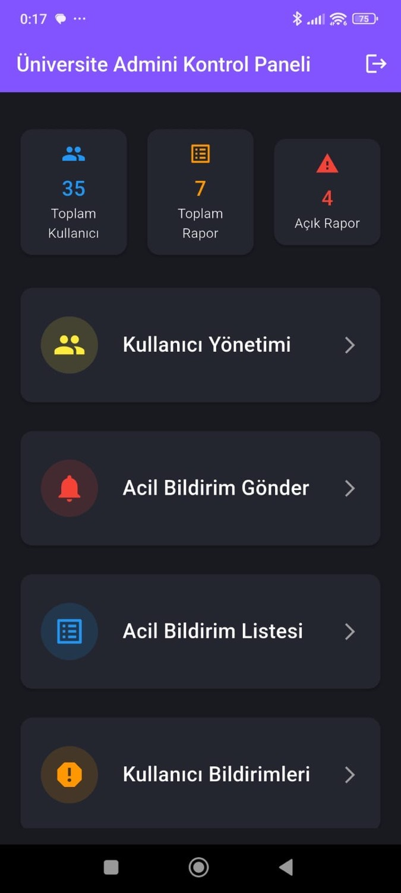
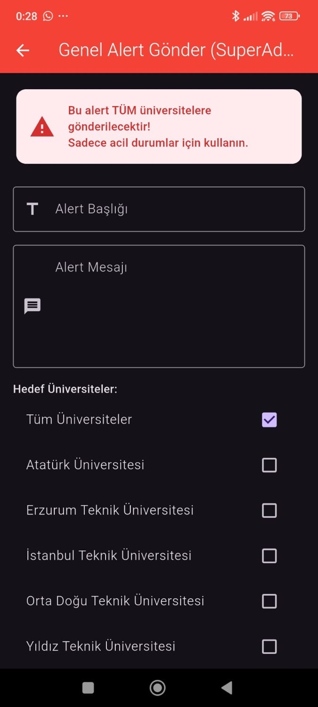
Bu projeyi Next.js ve TypeScript ile geliştirerek modern, hızlı ve SEO uyumlu bir blog platformu oluşturdum. İçerik yönetimi için Payload CMS’i entegre ettim ve özelleştirilmiş admin paneliyle kategori, yazı, medya ve kullanıcı yönetimini kolaylaştırdım. Veri saklama katmanında MongoDB kullandım. Böylece esnek ve ölçeklenebilir bir veri yapısı elde ettim. Görsel ve medya dosyalarının yönetimi için Cloudinary entegrasyonu sağladım, bu sayede dosya yükleme, optimizasyon ve hızlı erişim gibi avantajlar elde ettim. Ayrıca, GraphQL API desteğiyle esnek veri erişimi sundum ve frontend tarafında dinamik sayfa yönlendirmeleri, hızlı arama ve sayfalama gibi kullanıcı deneyimini artıran özellikler ekledim. Kodun sürdürülebilirliğini artırmak için component tabanlı mimari ve kapsamlı testler kullandım. Bu proje hem Diyetisyenimiz hem de ziyaretçiler için güvenli, hızlı ve yönetilebilir bir platform sunuyor.
Bu projeyi Next.js ve TypeScript ile geliştirerek modern, hızlı ve SEO uyumlu bir blog platformu oluşturdum. İçerik yönetimi için Payload CMS’i entegre ettim ve özelleştirilmiş admin paneliyle kategori, yazı, medya ve kullanıcı yönetimini kolaylaştırdım. Veri saklama katmanında MongoDB kullandım. Böylece esnek ve ölçeklenebilir bir veri yapısı elde ettim. Görsel ve medya dosyalarının yönetimi için Cloudinary entegrasyonu sağladım, bu sayede dosya yükleme, optimizasyon ve hızlı erişim gibi avantajlar elde ettim. Ayrıca, GraphQL API desteğiyle esnek veri erişimi sundum ve frontend tarafında dinamik sayfa yönlendirmeleri, hızlı arama ve sayfalama gibi kullanıcı deneyimini artıran özellikler ekledim. Kodun sürdürülebilirliğini artırmak için component tabanlı mimari ve kapsamlı testler kullandım. Bu proje hem Diyetisyenimiz hem de ziyaretçiler için güvenli, hızlı ve yönetilebilir bir platform sunuyor.
Kullanılan Teknolojiler - Next.js, TypeScript, Payload CMS,
MongoDB, Cloudinary, GraphQL.
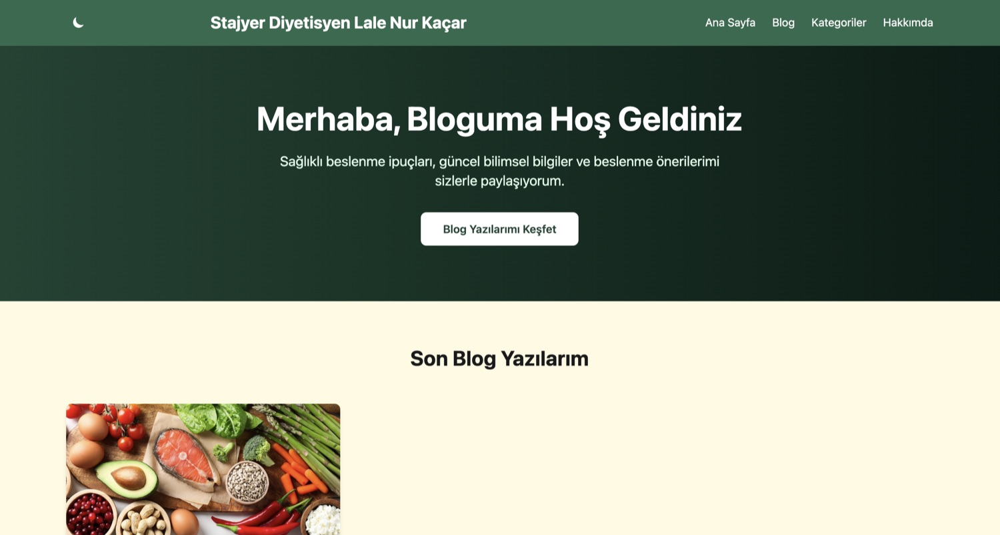
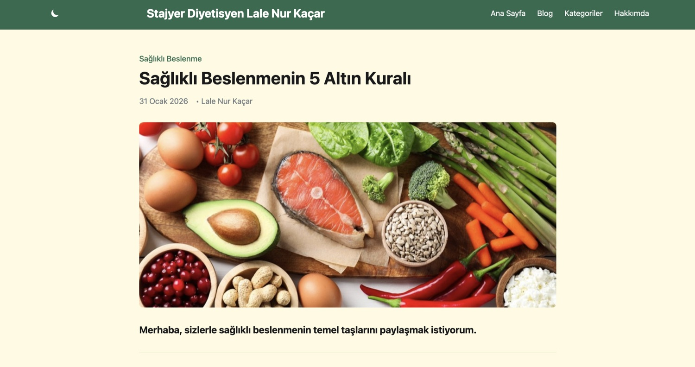
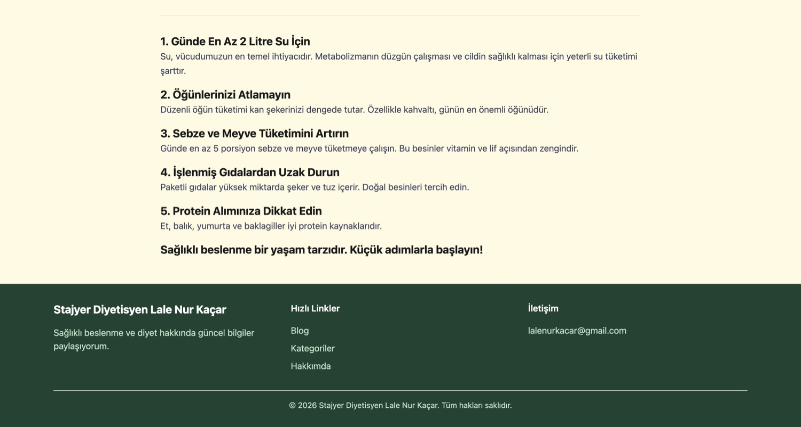
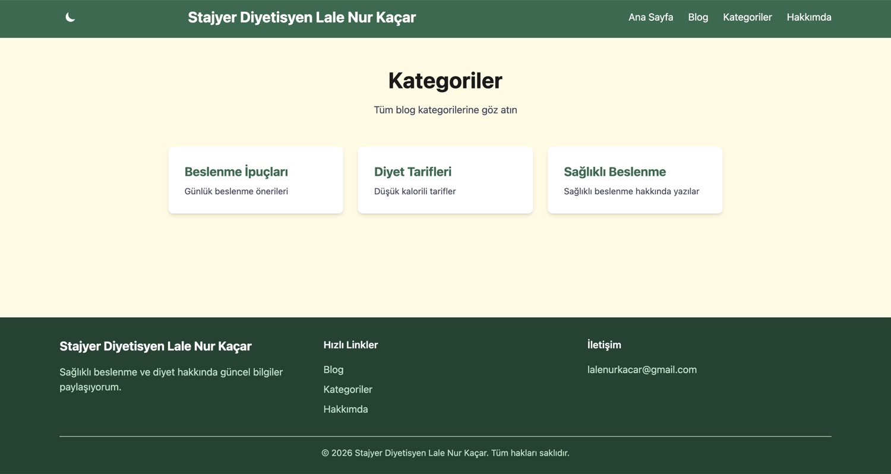
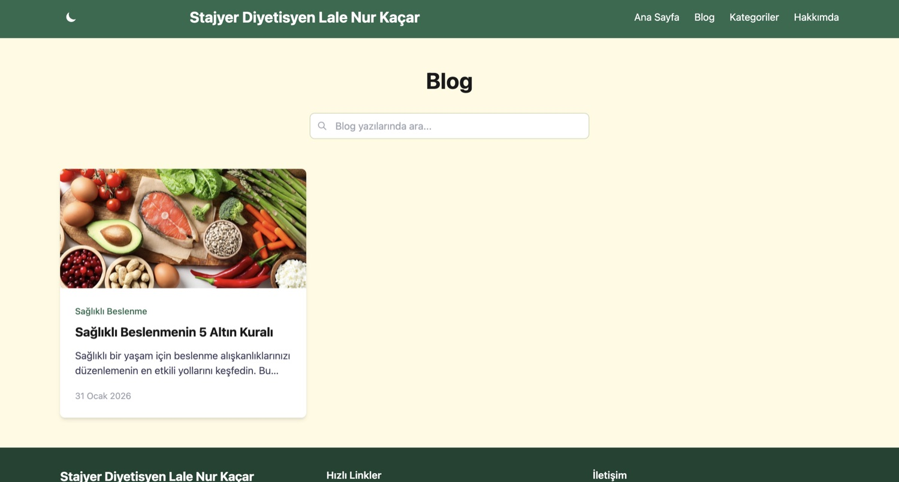
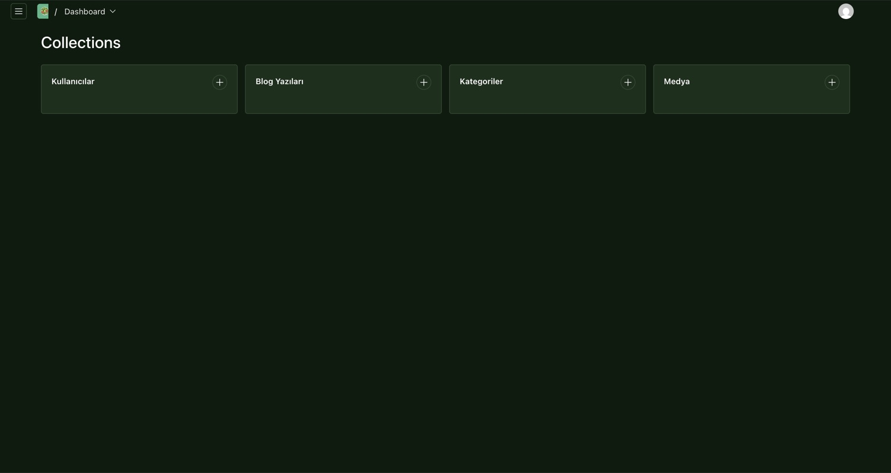
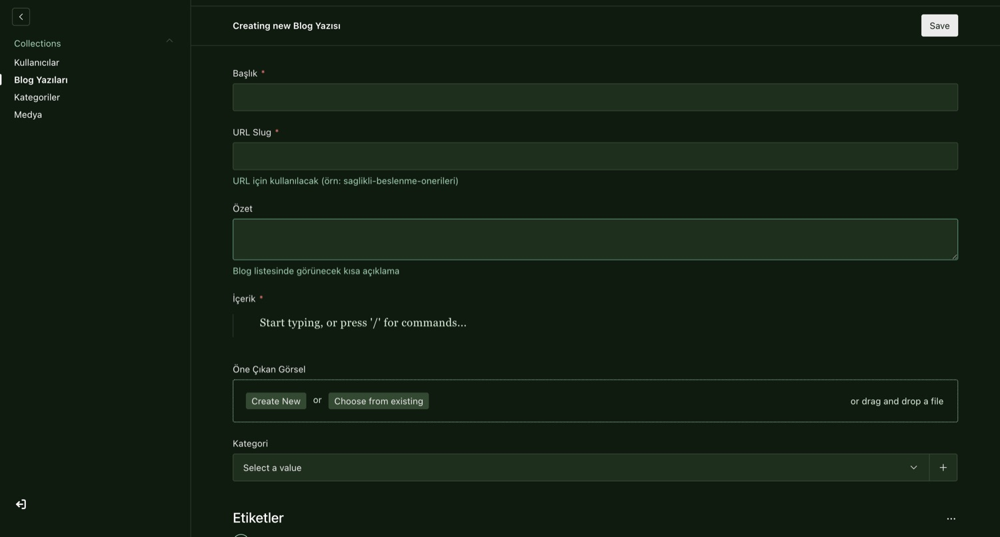
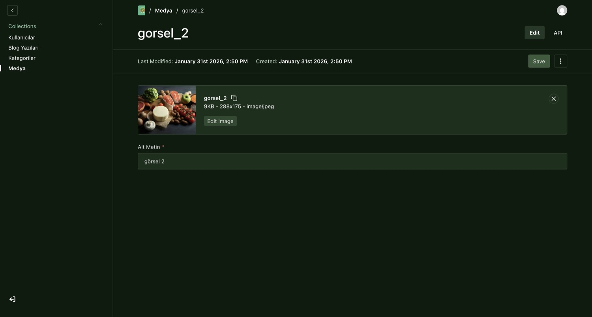